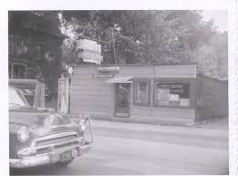
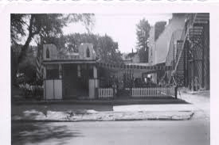

Welcome to Phillips Diner.
Celebrating seventy years in 2018, Phillips Diner is a family owned and operated Diner. Since 1948,
Phillips Diner has been owned and operated by members of the Phillips family.

The Diner got its start in 1930 as the Theater Dining Car, operated by M&F Fining Corporation. Situated next door to the Strand Theater,
the diner quickly became a favorite dining spot before, and after, attending the latest movies.
Russel, Ollie, and son Bud Phillips purchased the dining car from M&F Dining Corp. in 1948 and opened the Ford Street location as Phillips Diner.
They owned and operated the successful diner until 1970. Joseph Rish, son-in-law to Russel and Ollie Phillips, took over the operation of the Diner in 1970.
The diner suffered extensive damage when a fire destroyed its next door neighbor, the Strand Theater. Joe decided to repair the popular eatery and
eventually purchased Phillips Diner from Bud Phillips, in 1973.

In 1994, Judi Ashley, granddaughter to Russell and Ollie Phillips, joined the staff at Phillips Diner. Workinh eith her father Joe, Judi quickly became
Joe's right hand man, both in the kitchen and managing the staff.
Today, the Diner is owned and operated by Judi and her husband Don. Maintaining the Phillips name, the Diner staff still prepares many dishes using the
recipes that Russell and Ollie used when they first opened over seventy years ago! Phillis Diner prides itself for serving great meals at a great value.
On behalf of he owneres and staff, we thank you for choosing Phillips Diner and we look forward to serving you again!